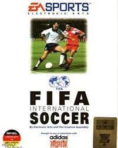
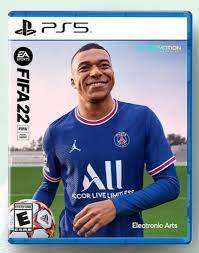

FIFA es una saga de videojuegos de fútbol publicados anualmente por Electronic Arts bajo el sello de EA Sports creado en Japón Cuando la saga comenzó a finales de 1993 se destacó por ser el primero en tener una licencia oficial de la FIFA.
FIFA HISTORY
Chronology Gallery
Decada de los 90
FIFA Soccer 95 es un videojuego de fútbol desarrollado por el equipo de Extended Play Productions de EA Canada y publicado por Electronic Arts en 1994. Es la segunda entrega de la serie FIFA. Fue lanzado para Mega Drive y sistemas DOS.1
Decada de los 2000
FIFA Football 2000 o FIFA 00, es un videojuego de fútbol desarrollado por Electronic Arts en 1999. Es la 7ª entrega de la saga. A pesar de que el juego cuenta con licencia FIFPro, hay cuatro jugadores que no estuvieron licenciados: Ronaldo (que aparece con el nombre "No. 9" en el Inter de Milán y en Brasil), Pelé ("No. 10" en los equipos Santos 1962-1963, New York Cosmos 1972-1975, Brasil 1958 y Brasil 1970), Romário
Decada de los 2010
FIFA 10 es la decimoséptima entrega de la famosa saga de videojuegos FIFA de EA Sports. La línea de juegos EA Sports ha informado que es el mejor FIFA de todos, con más de 50 mejoras en modo mánager, jugabilidad, gráficos, física de movimiento, formas de juego, inteligencia artificial IA, gráficos totalmente renovados para esta entrega.
Decada de los 2020
FIFA 20 es un videojuego de simulación de fútbol desarrollado por EA Sports. Está disponible en las plataformas de PlayStation 4, Xbox One, Microsoft Windows y Nintendo Switch (Versión Legacy). EA Sports lanzó la demo el 10 de septiembre de 2019 y el juego el día 27 de septiembre del mismo año. Es el primer juego de la franquicia en no estar disponible para PS3 y Xbox 360, siendo FIFA 19 el último en salir para estas consolas.
Ultima version 2022
FIFA 22 es un videojuego de futbol desarrollado por EA Vancouver y EA Romania, siendo publicado por EA Sports. Está disponible para PlayStation 4, PlayStation 5, Xbox Series X/S, Xbox One, Microsoft Windows, Google Stadia y Nintendo Switch. Es la vigésimo novena entrega en la serie FIFA y fue lanzado el 1 de octubre de manera global.